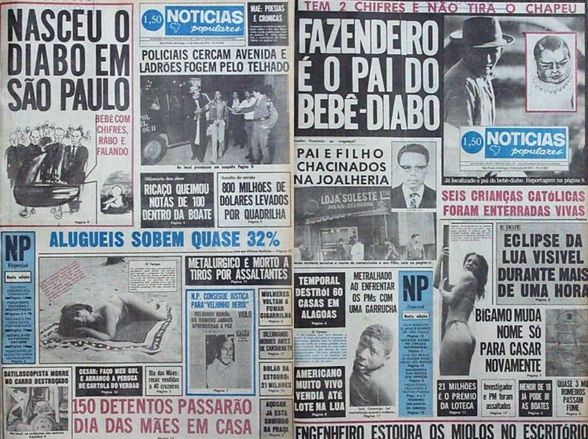

Se hoje as pessoas caem em click baits — quando um título anuncia algo falso, apenas para gerar clicks —, é porque, em algum momento da história, um veículo foi sensacionalista ou exagerado.
Esse é o caso do Notícias Populares, um jornal de São Paulo que circulou entre 1963 e 2001. Conheça algumas das manchetes mais absurdas da publicação.

Em 1975, uma manchete enorme no canto esquerdo da capa do NP, como era conhecido, anunciava a chegada de um bebê diabo, com chifres e rabo, na região do ABC Paulista. A notícia virou frequente nas edições da publicação e tomava espaço de diversas capas.
Em algumas delas, o NP noticiava uma mulher que enlouqueceu vendo o bebê, revelava quem era o pai da criança — um fazendeiro — e até anunciava a fuga do Lúcifer do ABC para o Nordeste, onde foi perseguido pelo Zé do Caixão (fato que também foi uma manchete).
Com uma linguagem mais acessível, o Notícias Populares, de vez em quando, não demonstrava qualquer pudor em suas manchetes. Na época do impeachment de Fernando Collor, por exemplo, o texto foi trocado pela foto de uma mulher protestando com o seu cartaz.
A partir dos anos 1990, o NP entrou em uma fase agressiva, onde aproveitava notícias de crimes e tragédias para chamar atenção. Manchetes polêmicas, como a “Inferno”, que mostrava mortos no Carandiru, de 1992, e a “Mamonas”, que noticiava a morte dos Mamonas Assassinas, revelam que a intenção do veículo era chocar seus leitores.
No caso da queda do avião dos Mamonas, a cobertura do veículo optou por fotos chocantes dos corpos logo depois do acidente e por títulos como “A última entrevista foi pro NP”.
A primeira manchete sobre a Loira-fantasma, uma mulher que teria estrangulado um taxista em Curitiba, surgiu em 1975. Assim como no caso do bebê demônio, esse tema foi muito explorado pelo jornal. Suas próximas aparições, incluindo em São Paulo, são os focos de diversas capas.
Em 1995, foi a vez da Gangue do Palhaço, “que aterrorizava São Paulo”. Em todas as edições que cobriu a trupe — que seria composta por um homem vestido de palhaço e uma mulher, de bailarina —, o NP deixou claro que tudo não se passava de boato e até mesmo alertou sobre os perigos de se espalhar uma fofoca assim.
Ainda que o veículo assegurasse às pessoas que a Gangue do Palhaço não era de verdade, o caso ganhou proporções enormes, as quais o NP aproveitou para criar mais manchetes. Em maio de 95, o sumiço de criança, na Cidade Tiradentes, foi associado à Gangue do Palhaço.
Tamanha foi a repercussão do caso que crianças tinham medo de ir às escolas, pais não deixavam os pequenos sair de casa e os palhaços que viviam de animação de festas perdiam os empregos — um deles foi, inclusive, ameaçado de morte.